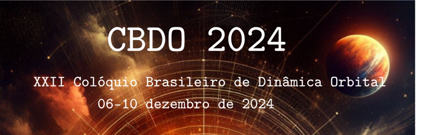

News and Dates
CBDO 2024 will take place at the "Laboratório de Integração e Testes (LIT)" of the National Institute for Space Research (INPE) between December 6th and 10th, 2024.
First call to send abstracts on April 10, 2024.
Dear Colleagues.
We would like to invite you to attend the Brazilian Colloquium on Orbital Dynamics, CBDO, scheduled for December 6 to 10, 2024, at the National Institute for Space Research, INPE, in São José dos Campos (SP) Brazil.
Areas:
- Orbital Mechanics and Spacecraft Control,
- Dynamic and Planetary Astronomy,
- Dynamical Systems applied to Space Sciences.
The period for submitting abstracts, which may be provisional, and for pre-registration, necessary to apply for support from funding agencies, will be open from April 10 to May 31.
Abstract submission and pre-registration information should be done on the CBDO website: https://pagecbdo.github.io/cbdo/ . Click on the abstract submission option, fill in the information: title, authors, affiliations, e-mail, the text of the abstract in English (up to 350 words and no equations), references (up to 3, concise style), acknowledgements, the desired type of presentation (Poster or Oral Communication), and finally, inform the category of participation of the author who will present the work (Professor/Researcher, Post-doctoral, Doctoral, Master or Undergraduate students).
Important dates:
- Submission of provisional abstracts and pre-registrations: from April 10 to May 31, 2024.
- Submission of the final version of the abstracts, new registrations and confirmation of pre-registrations: July 01 to September 30, 2024.
- Announcement of abstract acceptance and type of presentation: October 10.
- Payment of the registration fee - see table on the website.
For more information, visit the CBDO website or contact cbdo2024@gmail.com.
We look forward to meeting you at the CBDO 2024.
Warm regards,
Organizing Committee
Registration fees (R$), categories and payment deadlines
| Category |
Up to October 31 |
Up to November to event |
| Professor/Researcher |
400.00 |
500.00 |
| Pos-Doctoral |
300.00 |
380.00 |
| Doctoral student |
250.00 |
320.00 |
| Master student |
200.00 |
250.00 |
| Undergraduate student |
100.00 |
125.00 |
Invited Talks
David Nesvorny
Southwest Research Institute, Department of Space Studies, Estados Unidos
Felipe Braga Ribas
Universidade Tecnológica Federal do Paraná, Curitiba (PR), Brasil.
Claudio Vidal Diaz.
Departamento de Matemática, Universidad del Bío-Bío, Chile.
Hauke Hussmann.
German Aerospace Center, Planetary Research Institute, Berlim, Alemanha.
Marcelo Pedro dos Santos.
Departamento de Matemática, Universidade Federal Rural de Pernambuco (PE).
Rafael Sfair de Oliveira.
Universidade Estadual Paulista, Campus Guaratinguetá (SP), Brasil.
Romina Paula Di Sisto.
IALP-CONICET. JTP Mecánica Celeste I. Fac. de Cs Astronómicas y Geofísicas, La Plata, Bueno Aires, Argentina.
Abstract Submission
Submission of abstracts can be done using the form below, or, by
here .
Comissão Organizadora
Comitê Científico
Antônio Fernando Bertachini de Almeida Prado, INPE – Brasil
Eduardo Shirlippe Goes Leandro, UFPE - Brasil
Jorge Alfredo Correa-Otto, CONICET – Argentina
Marcelo Domingos Marchesin, UFMG – Brasil
Nelson Callegari Júnior, UNESP – Brasil
Priscilla Andressa de Souza Silva, UNESP – Brasil
Rogério Deienno, SwRI – Estados Unidos
Rosana Aparecida Nogueira de Araújo, UNESP – Brasil
Sylvio Ferraz-Mello, USP – Brasil
Comitê Local
Cristiano Fiorilo de Melo, UFMG – Brasil
Denílson Paulo Souza dos Santos, UNESP – Brasil
Gabriel Antonio Caritá, INPE – Brasil
Lucas Ruiz dos Santos, UNIFEI – Brasil
Luís Fernando de Osório Mello, UNIFEI – Brasil
Pryscilla Maria Pires dos Santos, UERJ – Brasil
Silvia Maria Giuliatti-Winter, UNESP – Brasil